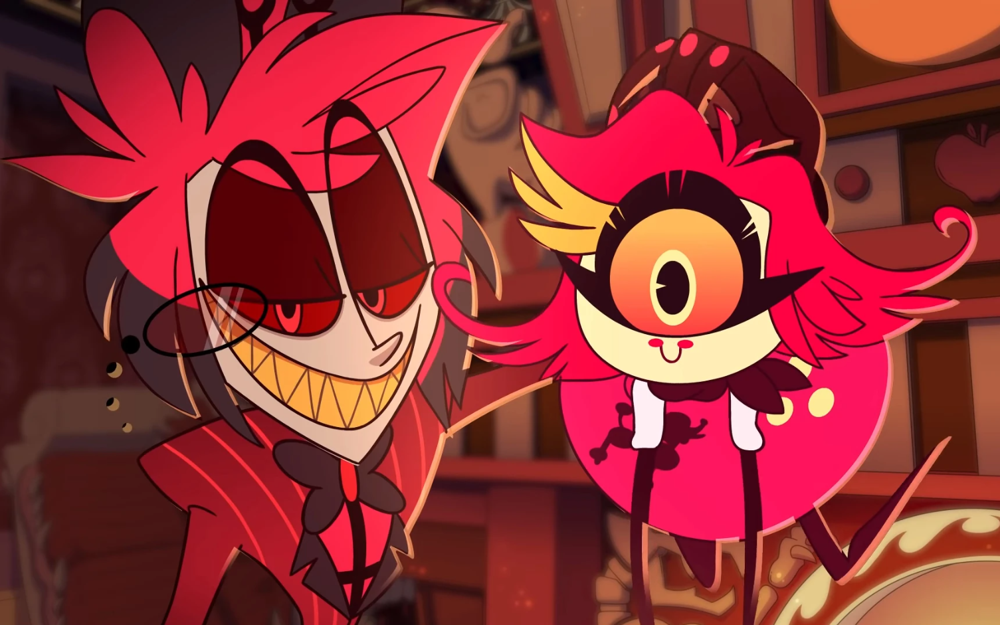
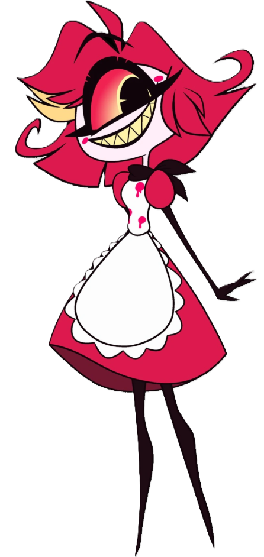
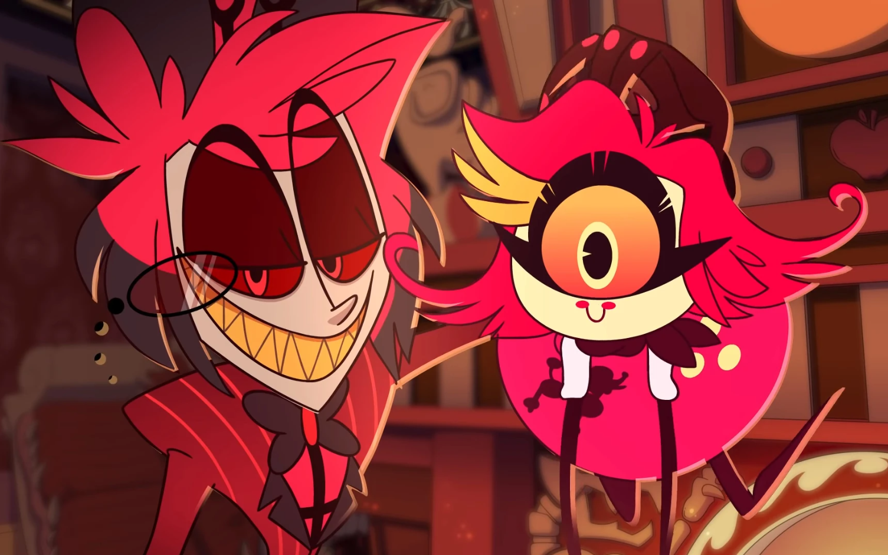
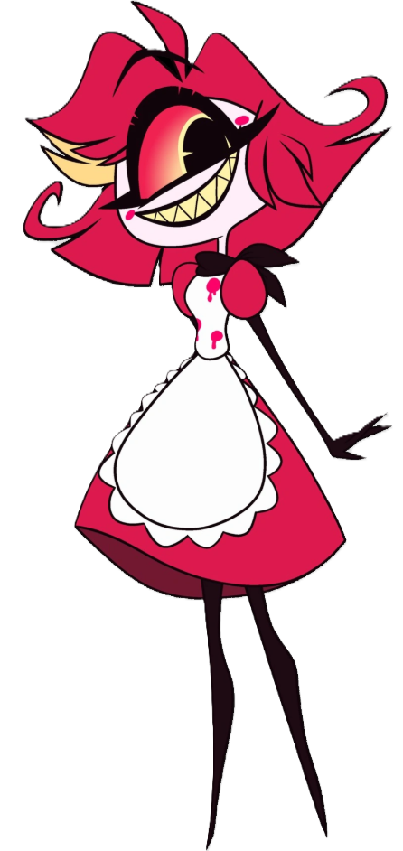

⛧ Niffty je hříšnou duší, která uzavřela dohodu s Alastorem, a proto nyní pracuje v Hazbin Hotelu, kde uklízí, vaří a likviduje škůdce (obzvlášť si užívá krysy a šváby). Baví ji násilí všeho druhu a je pro každou špatnost. Je velmi rychlá, mrštná a hyperaktivní s potřebou udržovat pořádek.
 


